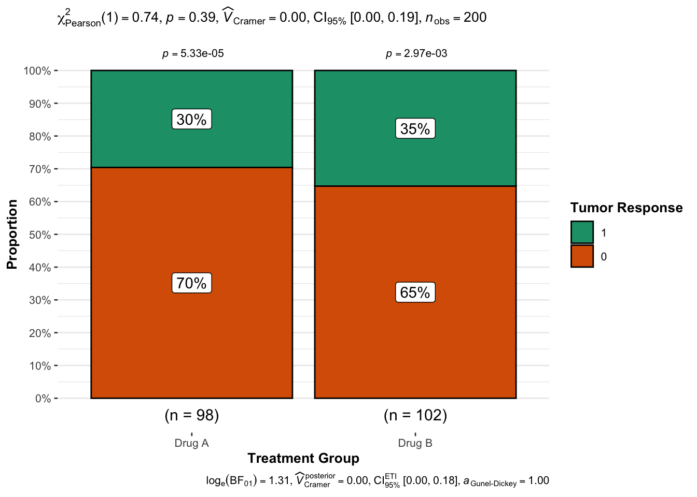
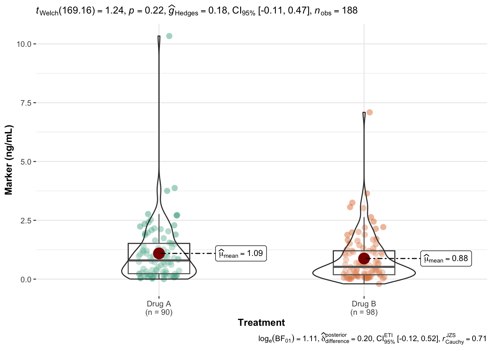

By now we have enough useful tools at our disposal practice an exploratory analysis:
Read a dataset from a file
Explore it using tidyverse verbs
Visualize potentially interesting variable using ggplot2
We will first go through these steps and then build on them by introducing additional tools for statistical reporting, but throughout this last piece of the course there will be fewer code examples and more room for you to experiment! This will take some time, so don’t worry if you don’t get everything down right the first time or if we don’t finish this chapter before the end of the course.
library(tidyverse)
── Attaching core tidyverse packages ──────────────────────── tidyverse 2.0.0 ──
✔ dplyr 1.1.4 ✔ readr 2.1.5
✔ forcats 1.0.0 ✔ stringr 1.5.1
✔ ggplot2 3.5.1 ✔ tibble 3.2.1
✔ lubridate 1.9.4 ✔ tidyr 1.3.1
✔ purrr 1.0.2
── Conflicts ────────────────────────────────────────── tidyverse_conflicts() ──
✖ dplyr::filter() masks stats::filter()
✖ dplyr::lag() masks stats::lag()
ℹ Use the conflicted package (<http://conflicted.r-lib.org/>) to force all conflicts to become errors
Importing Data
So far we have played with example data and the gapminder data, but now it’s time to start with something fresh and unfamiliar.
The dataset we’ll explore is called “chemo”, and you can find it in the data-raw directory in these workshop materials. It is stored as a CSV file called "chemo.csv", and to import it you could use the built-in function read.csv(), but to be more tidyverse-focused we’ll use the readr package and the read_csv() function, which is a tad more flexible and more user-friendly. We’ll give it the name chemo from here on out!
chemo <- readr::read_csv("data-raw/chemo.csv")
Rows: 200 Columns: 8
── Column specification ────────────────────────────────────────────────────────
Delimiter: ","
chr (3): trt, stage, grade
dbl (5): age, marker, response, death, ttdeath
ℹ Use `spec()` to retrieve the full column specification for this data.
ℹ Specify the column types or set `show_col_types = FALSE` to quiet this message.
chemo
# A tibble: 200 × 8
trt age marker stage grade response death ttdeath
<chr> <dbl> <dbl> <chr> <chr> <dbl> <dbl> <dbl>
1 Drug A 23 0.16 T1 II 0 0 24
2 Drug B 9 1.11 T2 I 1 0 24
3 Drug A 31 0.277 T1 II 0 0 24
4 Drug A NA 10.3 T3 III 1 1 17.6
5 Drug A 51 2.77 T4 III 1 1 16.4
6 Drug B 39 0.613 T4 I 0 1 15.6
7 Drug A 37 0.354 T1 II 0 0 24
8 Drug A 32 1.74 T1 I 0 1 18.4
9 Drug A 31 0.144 T1 II 0 0 24
10 Drug B 34 0.205 T3 I 0 1 10.5
# ℹ 190 more rows
Here is an basic data dictionary for the chemo dataset:
Variable
Description
trt
Treatment group
age
Age in years
marker
Marker level (ng/mL)
stage
Tumor stages T1 through T4
grade
Tumor grade I, II, III
response
Tumor response (0 = no, 1 = yes)
death
Death (0 = no, 1 = yes)
ttdeath
Months to death
Show the number of observations
of the whole dataset
per treatment group
per treatment group and stage
For the age and marker,
Calculate common statistics (range, mean, …)
Also visualize the variables appropriately and note anything unusual
Give counts and proportions of response and death
Data Cleaning
Data cleaning encompasses anything we might want to or need to change about the dataset before we do any actual analysis. This can be for cosmetic reasons, like renaming variables or recoding variables from a numeric “0 or 1” to a readable “no or yes”.
Plausibility
Both age and marker contain missing values as you should have seen earlier. Substitute them with the median value of each variable. This is a simple imputation technique that’s not good enough for a clinical trial, but good enough for our purposes!
A histogram of marker looks odd. There appears to be a strong outlier, maybe more?
For positive outliers we can “clip” them to e.g. the 95% quantile of the data.
Are there other implausible values? What could be done about them?
Cosmetics
Once the data is clean in the “looks plausible” sense, we can do some cosmetic changes.
Recode response and death to new variables such that 1 -> “Yes” and 0 -> “No”
The new variable names should be response_text and death_text while keeping the original ones!
Both variables should be factors sorted with Yes in the first position
You can use the regular ifelse() or dplyr::if_else() for this
Create a categorized age variable in 10 year groups, e.g. <=10, 11–20, etc.
Likely case_when() from dplyr is easiest to do this, albeit a bit verbose
Alternative: Try cut(), which might be harder to use but more compact
Rename the ttdeath variable to time and the death variable to status
The verb for this is rename()!
Don’t Forget to Save
By now we have modified version of our chemo dataset with a few changes we don’t want to lose, so let’s save it as a file either for sharing with colleagues or just as the starting point for subsequent analyses.
Write the dataset as a file to the data directory, once as an “RDS” file and once as a CSV file but with ; as the delimiter.
Getting Ready for Publishing
Now that our data is a bit cleaner, we want to do some actual analysis.
We assume that the research question here is quite clear: There are two chemotherapy treatment groups in trt, and we’re interested in any differences between the two groups.
We will approach this both descriptively and also with a bit of statistics.
Descriptives
For any kind of research, there’s always tables. Tons and tons of tables.
Makign tables in R used to be a lot less comfortable than it is now, thanks to great packages like table1 and gtsummary. We’ll use gtsummary for a few common descriptive tables:
You’ll note that the variable names are not very nice, and we could manually set these labels in the tbl_summary function, but a neat trick is to use the labelled package actually, which make it easy to set variable labels via a form of attribute.
Unfortunately not everything in R knows to use these labels, but gtsummary does and for now that’s good enough:
There’s a lot more we could do with this and you can learn all about it on the package’s great documentation website at https://www.danieldsjoberg.com/gtsummary/.
Note
The dataset chemo we used here is actually a slightly modified version of a dataset that comes with the gtsumamry package called trial! The good thing is that the documentation examples for gtsummary should be enough to get you started with chemo!
Statistical Analysis
Describing the data is fine and all but what about statistics?
Well, statistical analysis is not the focus of this course, but we can of course leverage some of the powerful tools at our disposal.
Let’s start with ggstatsplot again:
library(ggstatsplot)
You can cite this package as:
Patil, I. (2021). Visualizations with statistical details: The 'ggstatsplot' approach.
Journal of Open Source Software, 6(61), 3167, doi:10.21105/joss.03167
We most likely want to look at the tumor response between the treatment groups and see whether there is any significant difference.
The absolute numbers don’t tell us too much yet:
chemo |>count(response, trt)
# A tibble: 4 × 3
response trt n
<dbl> <chr> <int>
1 0 Drug A 69
2 0 Drug B 66
3 1 Drug A 29
4 1 Drug B 36
This function however does a lot more:
ggbarstats(data = chemo, x = response, y = trt,xlab ="Treatment Group",ylab ="Proportion",legend.title ="Tumor Response")

Apart from displaying percentages on a stacked barchart, it also gives us information on the result of the statistical test used to see whether the proportions are equal between treatment groups or not — and it looks like the result is not significant with p > 0.05
ggbetweenstats(data = chemo, x = trt, y = marker, xlab ="Treatment", ylab ="Marker (ng/mL)")

Warning
Note that packages like ggstatsplot make it quite easy to do all kinds of statistical tests all the time, but just like medical diagnostic tests, it isn’t necessarily a good idea to test everything.
Advanced: Survival Curves
Another common type of plot to create is the Kaplan-Meier curve for each treatment group using the time survival time in months and the status survival indicator (0 for censoring, 1 for death).
The ggsurvfit package makes this very convenient:
# install.packages("ggsurvfit")library(ggsurvfit)survfit2(Surv(time, status) ~ trt, data = chemo) |>ggsurvfit(linewidth =1) +add_confidence_interval() +add_risktable() +add_quantile(y_value =0.6, color ="gray50", linewidth =0.75) +scale_ggsurvfit()